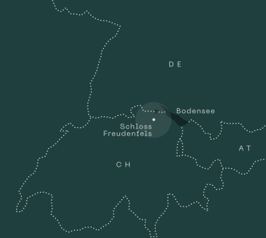

				
		<!doctype html>
		<html lang="en">
			


<head>
				<meta charset="utf-8" />
				<link
								rel="alternate"
								hreflang="ru-ru"
								href="/ru/"
						  />
				<title>Inner Circle</title>
				<meta name="viewport" content="width=device-width, initial-scale=1" />
				<meta property="og:image" content="../OpenGraphImage-J7OLYR66.jpg" />
				<link rel="shortcut icon" type="image/png" href="../favicon-OWSPSPJF.png" />
				<link rel="prefetch" href="/en/"/><link rel="prefetch" href="/en/404/"/><link rel="prefetch" href="/en/booking-enquiry/"/><link rel="prefetch" href="/en/cause-we-care/"/><link rel="prefetch" href="/en/event/"/><link rel="prefetch" href="/en/form-successfully-submitted/"/><link rel="prefetch" href="/en/hotel/"/><link rel="prefetch" href="/en/impressum/"/><link rel="prefetch" href="/en/info/"/><link rel="prefetch" href="/en/kontakt/"/><link rel="prefetch" href="/en/legal/"/><link rel="prefetch" href="/en/lieferanten/"/><link rel="prefetch" href="/en/ostern/"/><link rel="prefetch" href="/en/restaurant/"/><link rel="prefetch" href="/en/seminar/"/><link rel="prefetch" href="/en/sommerfrische/"/><link rel="prefetch" href="/ru/"/><link rel="prefetch" href="/ru/404/"/><link rel="prefetch" href="/ru/adventsfenster/"/><link rel="prefetch" href="/ru/anfrage-event/"/><link rel="prefetch" href="/ru/anfrage-hochzeit-friday-special/"/><link rel="prefetch" href="/ru/anfrage-hochzeit/"/><link rel="prefetch" href="/ru/anfrage-seminar/"/><link rel="prefetch" href="/ru/arbeiten-auf-dem-schloss/"/><link rel="prefetch" href="/ru/auffahrt/"/><link rel="prefetch" href="/ru/bewerbung/"/><link rel="prefetch" href="/ru/buchungsanfrage/"/><link rel="prefetch" href="/ru/cause-we-care/"/><link rel="prefetch" href="/ru/chor-der-100/"/><link rel="prefetch" href="/ru/code/"/><link rel="prefetch" href="/ru/comedy-dinner/"/><link rel="prefetch" href="/ru/event/"/><link rel="prefetch" href="/ru/form-successfully-submitted/"/><link rel="prefetch" href="/ru/formats/"/><link rel="prefetch" href="/ru/heiraten-auf-dem-schloss/"/><link rel="prefetch" href="/ru/hochzeiten-und-feiern/"/><link rel="prefetch" href="/ru/hotel/"/><link rel="prefetch" href="/ru/impressum/"/><link rel="prefetch" href="/ru/info/"/><link rel="prefetch" href="/ru/initiativ-bewerbung/"/><link rel="prefetch" href="/ru/kontakt/"/><link rel="prefetch" href="/ru/legal/"/><link rel="prefetch" href="/ru/lieferanten/"/><link rel="prefetch" href="/ru/metzgete/"/><link rel="prefetch" href="/ru/nachricht/"/><link rel="prefetch" href="/ru/order-successfully-submitted/"/><link rel="prefetch" href="/ru/ostern/"/><link rel="prefetch" href="/ru/restaurant/"/><link rel="prefetch" href="/ru/seminar/"/><link rel="prefetch" href="/ru/senderliste/"/><link rel="prefetch" href="/ru/sommerfrische/"/><link rel="prefetch" href="/ru/space/"/><link rel="prefetch" href="/ru/tag-der-offenen-tur/"/><link rel="prefetch" href="/ru/theater-annet-am-rhy/"/><link rel="prefetch" href="/ru/tickets-sommerfest/"/><link rel="prefetch" href="/ru/veranstaltungen/"/><link rel="prefetch" href="/ru/wild-event/"/>
				<script>
					window.__ROUTES__ = ["/en/","/en/404/","/en/booking-enquiry/","/en/cause-we-care/","/en/event/","/en/form-successfully-submitted/","/en/hotel/","/en/impressum/","/en/info/","/en/kontakt/","/en/legal/","/en/lieferanten/","/en/ostern/","/en/restaurant/","/en/seminar/","/en/sommerfrische/","/ru/","/ru/404/","/ru/adventsfenster/","/ru/anfrage-event/","/ru/anfrage-hochzeit-friday-special/","/ru/anfrage-hochzeit/","/ru/anfrage-seminar/","/ru/arbeiten-auf-dem-schloss/","/ru/auffahrt/","/ru/bewerbung/","/ru/buchungsanfrage/","/ru/cause-we-care/","/ru/chor-der-100/","/ru/code/","/ru/comedy-dinner/","/ru/event/","/ru/form-successfully-submitted/","/ru/formats/","/ru/heiraten-auf-dem-schloss/","/ru/hochzeiten-und-feiern/","/ru/hotel/","/ru/impressum/","/ru/info/","/ru/initiativ-bewerbung/","/ru/kontakt/","/ru/legal/","/ru/lieferanten/","/ru/metzgete/","/ru/nachricht/","/ru/order-successfully-submitted/","/ru/ostern/","/ru/restaurant/","/ru/seminar/","/ru/senderliste/","/ru/sommerfrische/","/ru/space/","/ru/tag-der-offenen-tur/","/ru/theater-annet-am-rhy/","/ru/tickets-sommerfest/","/ru/veranstaltungen/","/ru/wild-event/","/unpublished/"]
				</script>
				<script async defer src="../index.js"></script>
				<link rel="stylesheet" type="text/css" href="../index.css" />

				
			</head>
		

</html>
	
				
		<body class="_836ebc">
			<div class="_0300ce"></div>
			
		<main
			class="_7abbf3"
			data-background="green"
			data-animate="true"
		>
			<div class="_b28a1c">
						 <div class="_8e32b5"></div> 
		<div
			class="_fddeb5 _da312f"
		>
			<div class="_09d861">
				
				<div class="_30ea2f _76b310"><h1>Inner<br />Circle.</h1></div>
			</div>
			
			<div class="_756826">
				<div class="_936645 _76b310"><p>Once a medieval fortification, <br />now an oasis of calm.</p></div>
				<div class="_b02a17 _76b310"><p>Beautifully situated amidst untouched nature, easily accessible from Switzerland, Liechtenstein, Austria, and Germany. Equipped with everything that makes your event unforgettable and your seminar a success – not only technically but above all humanly, because we are here with passion and heart for you.</p></div>
				<div class="_d43f79 _76b310"><ul><li>Celebrate inside <br />with 70 <br />or outside with <br />120 guests.<br /><br /><a href="/en/event/">Learn more</a></li><li>Concentrated <br />meetings with <br />up to 80 <br />participants.<br /> <br /><a href="/en/seminar/">Learn more</a></li><li>Fine dining, <br />seasonal <br />and <br />regional.<br /> <br /><a href="/en/restaurant/">Learn more</a></li><li>Sleep deeply <br />with garden <br />or <br />lake view.<br /> <br /><a href="/en/hotel/">Learn more</a></li></ul></div>
				
			</div>
			<div class="_f4bd3b _76b310">
						<picture class="_e7e68a">
							<source srcset="/map_desktop.image-FMOASJK5.svg" media="(min-width: 1024px)" />
							
						</picture>
				  </div>
		</div>
	 <div
		class="_d4edf9 _390565"
		style="--aspect-portrait: 1.8666666666666667; --aspect-landscape: 0.5626518569940993"
	>
		<picture>
			<source class="_753509" srcset="https://images.prismic.io/schloss-freudenfels/94a528d9-5beb-4b58-8d06-c494315622c2_DSC05573-Bearbeitet.png?auto=compress%2Cformat&w=480 480w, https://images.prismic.io/schloss-freudenfels/94a528d9-5beb-4b58-8d06-c494315622c2_DSC05573-Bearbeitet.png?auto=compress%2Cformat&w=960 960w, https://images.prismic.io/schloss-freudenfels/94a528d9-5beb-4b58-8d06-c494315622c2_DSC05573-Bearbeitet.png?auto=compress%2Cformat&w=1440 1440w, https://images.prismic.io/schloss-freudenfels/94a528d9-5beb-4b58-8d06-c494315622c2_DSC05573-Bearbeitet.png?auto=compress%2Cformat&w=1920 1920w, https://images.prismic.io/schloss-freudenfels/94a528d9-5beb-4b58-8d06-c494315622c2_DSC05573-Bearbeitet.png?auto=compress%2Cformat&w=2560 2560w, https://images.prismic.io/schloss-freudenfels/94a528d9-5beb-4b58-8d06-c494315622c2_DSC05573-Bearbeitet.png?auto=compress%2Cformat&w=3800 3800w" media="(orientation: landscape)" />
			
		</picture>
	</div><div class="_fbca88">
		<div class="_c41525">
			
			<div class="_9c6871 _76b310"><h1>News­worthy</h1></div>
		</div>
		<div class="_00ed9b">
			<div class="_6cb22c _76b310">
						<div class="_74c999"><h1>myclimate - Cause we Care</h1></div>
						<div class="_66ad79">we are on board!</div>
						<div class="_fb9fa2"><p>This commitment is realized in collaboration with the Swiss foundation myclimate as part of the <em><a href="../../external.html?link=https://www.causewecare.ch/" target="_blank" rel="noopener noreferrer">«Cause We Care»</a></em> program.</p></div>
					</div>
		</div>
	</div>
		<div
			class="_fddeb5 _bfcb5a"
		>
			<div class="_09d861">
				<div class="_f55a96 _76b310">Wedding, Family & Corporate Events</div>
				<div class="_30ea2f _76b310"><h1>Celebrate <br />like royalty.</h1></div>
			</div>
			<div class="_8eb485 _390565 _42c532">
		<div class="_c330a0" style="padding-bottom: 129.9638989169675%;">
			
		</div>
	</div>
			<div class="_756826">
				<div class="_936645 _76b310"><p>Or beautifully simple.</p></div>
				<div class="_b02a17 _76b310"><p>Whether you want to get married in an intimate setting or on a grand scale, celebrate a baptism or a birthday party, hold a simple corporate event or a festive banquet, Inner Circle offers bright and festive rooms in various configurations – as well as a castle chapel, a castle terrace, and an impressive rose garden with a view of the castle and Lake Constance. Your guests will remember this for a long time. And so will you.</p></div>
				<div class="_d43f79 _76b310"><ul><li>Romantic <br />rose garden. </li><li>Hall for up <br />to 70 guests. </li><li>Celebrations <br />until 3 am.</li></ul></div>
				<div class="_783e33 _76b310"><ul><li><a href="mailto:info@schloss-freudenfels.ch?subject=Inquiry%20for%20an%20event" target="_blank" rel="noopener noreferrer">Inquiry</a></li><li><a href="/en/event/">Learn more</a></li></ul></div>
			</div>
			
		</div>
	 <div
		class="_d4edf9 _390565"
		style="--aspect-portrait: 1.8666666666666667; --aspect-landscape: 0.5626518569940993"
	>
		<picture>
			<source class="_753509" srcset="https://images.prismic.io/schloss-freudenfels/9e6164fd-e0e2-46db-b729-59ff62cfa72f_DSC05978-Bearbeitet.png?auto=compress%2Cformat&w=480 480w, https://images.prismic.io/schloss-freudenfels/9e6164fd-e0e2-46db-b729-59ff62cfa72f_DSC05978-Bearbeitet.png?auto=compress%2Cformat&w=960 960w, https://images.prismic.io/schloss-freudenfels/9e6164fd-e0e2-46db-b729-59ff62cfa72f_DSC05978-Bearbeitet.png?auto=compress%2Cformat&w=1440 1440w, https://images.prismic.io/schloss-freudenfels/9e6164fd-e0e2-46db-b729-59ff62cfa72f_DSC05978-Bearbeitet.png?auto=compress%2Cformat&w=1920 1920w, https://images.prismic.io/schloss-freudenfels/9e6164fd-e0e2-46db-b729-59ff62cfa72f_DSC05978-Bearbeitet.png?auto=compress%2Cformat&w=2560 2560w, https://images.prismic.io/schloss-freudenfels/9e6164fd-e0e2-46db-b729-59ff62cfa72f_DSC05978-Bearbeitet.png?auto=compress%2Cformat&w=3800 3800w" media="(orientation: landscape)" />
			
		</picture>
	</div>
		<div
			class="_fddeb5 _bfcb5a _eacf59"
		>
			<div class="_09d861">
				<div class="_f55a96 _76b310">Seminar, Conference & Workshop</div>
				<div class="_30ea2f _76b310"><h1>Focused work. </h1></div>
			</div>
			<div class="_8eb485 _390565 _42c532">
		<div class="_c330a0" style="padding-bottom: 129.99999999999997%;">
			
		</div>
	</div>
			<div class="_756826">
				<div class="_936645 _76b310"><p>Your customized off-site.</p></div>
				<div class="_b02a17 _76b310"><p>Inner Circle is a top-notch seminar and conference center. In order to achieve good results with concentration, the bright rooms available for various needs, excellent technical equipment, and unobtrusive all-around care of the participants are helpful. However, our greatest asset is the quiet location, including generous outdoor areas that invite inspiring walks and talks, which often lead to the really brilliant ideas.</p></div>
				<div class="_d43f79 _76b310"><ul><li>Up to 80 <br />participants.</li><li>Auditorium, seminar <br />and group rooms.</li><li>Continuous <br />catering.</li></ul></div>
				<div class="_783e33 _76b310"><ul><li><a href="mailto:info@schloss-freudenfels.ch?subject=Inquiry%20for%20seminar%2C%20conference%20or%20workshop" rel="noopener noreferrer">Inquiry</a></li><li><a href="/en/seminar/">Details</a></li></ul></div>
			</div>
			
		</div>
	 <div
		class="_d4edf9 _390565"
		style="--aspect-portrait: 1.8666666666666667; --aspect-landscape: 0.5626953803403959"
	>
		<picture>
			<source class="_753509" srcset="https://images.prismic.io/schloss-freudenfels/c758f58c-e71c-43f7-a0e5-67a53b5a765c_DSC05995-Bearbeitet.png?auto=compress%2Cformat&w=480 480w, https://images.prismic.io/schloss-freudenfels/c758f58c-e71c-43f7-a0e5-67a53b5a765c_DSC05995-Bearbeitet.png?auto=compress%2Cformat&w=960 960w, https://images.prismic.io/schloss-freudenfels/c758f58c-e71c-43f7-a0e5-67a53b5a765c_DSC05995-Bearbeitet.png?auto=compress%2Cformat&w=1440 1440w, https://images.prismic.io/schloss-freudenfels/c758f58c-e71c-43f7-a0e5-67a53b5a765c_DSC05995-Bearbeitet.png?auto=compress%2Cformat&w=1920 1920w, https://images.prismic.io/schloss-freudenfels/c758f58c-e71c-43f7-a0e5-67a53b5a765c_DSC05995-Bearbeitet.png?auto=compress%2Cformat&w=2560 2560w, https://images.prismic.io/schloss-freudenfels/c758f58c-e71c-43f7-a0e5-67a53b5a765c_DSC05995-Bearbeitet.png?auto=compress%2Cformat&w=3800 3800w" media="(orientation: landscape)" />
			
		</picture>
	</div>
		<div
			class="_fddeb5 _bfcb5a"
		>
			<div class="_09d861">
				<div class="_f55a96 _76b310">Cuisine</div>
				<div class="_30ea2f _76b310"><h1>To the <br />table.</h1></div>
			</div>
			<div class="_8eb485 _390565 _42c532">
		<div class="_c330a0" style="padding-bottom: 130.12048192771084%;">
			
		</div>
	</div>
			<div class="_756826">
				<div class="_936645 _76b310"><p>Feast – regional and seasonal.</p></div>
				<div class="_b02a17 _76b310"><p><strong>Regular Opening Hours:</strong></p><p>We are a seminar and event hotel, available exclusively for your event or conference throughout the year. Our restaurant is open to all only during the summer season for the summer retreat and for special events.</p><p></p><p><a href="/ru/veranstaltungen/"><strong>Events in 2025</strong></a></p><p><a href="/en/sommerfrische/"><strong>Summer Retreat</strong></a><br />(28th July 2025 - 22nd August 2025)</p><p></p><p>Whether you are with us for private or business reasons, our kitchen will indulge you with specialties prepared from carefully selected, mostly regional and seasonal ingredients. In good weather, enjoy your meal on the cozy sun terrace, served with a warm welcome and a view of the castle and lake – en guete.</p></div>
				<div class="_d43f79 _76b310"><ul><li>Terrace with <br />a view of the <br />castle and the lake.</li><li>A fine selection <br />of regional <br />wines and beers.</li><li>Service <br />as one would <br />wish for.</li></ul></div>
				<div class="_783e33 _76b310"><ul><li><a href="mailto:info@schloss-freudenfels.ch?subject=Inquiry%20for%20booking%20a%20table" rel="noopener noreferrer">Book a table</a></li><li><a href="/en/restaurant/">Details</a></li></ul></div>
			</div>
			
		</div>
	 <div
		class="_d4edf9 _390565"
		style="--aspect-portrait: 1.8666666666666667; --aspect-landscape: 0.5630427231677666"
	>
		<picture>
			<source class="_753509" srcset="https://images.prismic.io/schloss-freudenfels/e47664b5-6d2b-4172-bbc4-85f9bcc25056_DSC05533-Bearbeitet.png?auto=compress%2Cformat&w=480 480w, https://images.prismic.io/schloss-freudenfels/e47664b5-6d2b-4172-bbc4-85f9bcc25056_DSC05533-Bearbeitet.png?auto=compress%2Cformat&w=960 960w, https://images.prismic.io/schloss-freudenfels/e47664b5-6d2b-4172-bbc4-85f9bcc25056_DSC05533-Bearbeitet.png?auto=compress%2Cformat&w=1440 1440w, https://images.prismic.io/schloss-freudenfels/e47664b5-6d2b-4172-bbc4-85f9bcc25056_DSC05533-Bearbeitet.png?auto=compress%2Cformat&w=1920 1920w, https://images.prismic.io/schloss-freudenfels/e47664b5-6d2b-4172-bbc4-85f9bcc25056_DSC05533-Bearbeitet.png?auto=compress%2Cformat&w=2560 2560w, https://images.prismic.io/schloss-freudenfels/e47664b5-6d2b-4172-bbc4-85f9bcc25056_DSC05533-Bearbeitet.png?auto=compress%2Cformat&w=3800 3800w" media="(orientation: landscape)" />
			
		</picture>
	</div>
		<div
			class="_fddeb5 _bfcb5a _eacf59"
		>
			<div class="_09d861">
				<div class="_f55a96 _76b310">HOTEL</div>
				<div class="_30ea2f _76b310"><h1>Dream <br />beautifully. </h1></div>
			</div>
			<div class="_8eb485 _390565 _42c532">
		<div class="_c330a0" style="padding-bottom: 129.91178829190056%;">
			
		</div>
	</div>
			<div class="_756826">
				<div class="_936645 _76b310"><p>With a garden <br />or lake view.</p></div>
				<div class="_b02a17 _76b310"><p><strong>Regular Opening Hours:</strong></p><p>We are a seminar and event hotel, available exclusively for your event or conference throughout the year. Our hotel is open to all only during the summer season for the summer retreat and for special events.</p><p><a href="/ru/veranstaltungen/"><strong>Events in 2025</strong></a></p><p><a href="/en/sommerfrische/"><strong>Summer Retreat</strong></a><br />(28th July 2025 - 22nd August 2025)</p><p></p><p>Our bright and cozy double rooms are waiting for you with a garden or lake view, a flat-screen TV, and spacious bathroom. And always included: a rich breakfast that you can enjoy on the sun terrace in good weather. Around the property, there are loungers in cozy places and comfortable lounges to relax in. We wish you a relaxing stay.</p></div>
				<div class="_d43f79 _76b310"><ul><li>5 single and <br />20 double rooms.</li><li>Rich breakfast <br />included.</li><li>Sun loungers and <br />lounges for relaxing.</li></ul></div>
				<div class="_783e33 _76b310"><ul><li><a href="mailto:info@schloss-freudenfels.ch?subject=Inquiry%20to%20book%20a%20stay" rel="noopener noreferrer">Book a stay</a></li><li><a href="/en/hotel/">Learn more</a></li></ul></div>
			</div>
			
		</div>
	<div class="_ef7e1c">
		<div class="_50a212 _76b310">MICHÈLE WARNA, Managing Director</div>
		<blockquote class="_0f2468 _76b310"><p>«No matter how complex our actions may be, in the end, it boils down to the simple desire of offering our guests a very special and unforgettable stay.»</p></blockquote>
	</div> <div
		class="_d4edf9 _390565"
		style="--aspect-portrait: 1.8666666666666667; --aspect-landscape: 0.5626518569940993"
	>
		<picture>
			<source class="_753509" srcset="https://images.prismic.io/schloss-freudenfels/6774a626-3819-41a9-acbb-7990dfa8aaf8_DSC05054-Bearbeitet.png?auto=compress%2Cformat&w=480 480w, https://images.prismic.io/schloss-freudenfels/6774a626-3819-41a9-acbb-7990dfa8aaf8_DSC05054-Bearbeitet.png?auto=compress%2Cformat&w=960 960w, https://images.prismic.io/schloss-freudenfels/6774a626-3819-41a9-acbb-7990dfa8aaf8_DSC05054-Bearbeitet.png?auto=compress%2Cformat&w=1440 1440w, https://images.prismic.io/schloss-freudenfels/6774a626-3819-41a9-acbb-7990dfa8aaf8_DSC05054-Bearbeitet.png?auto=compress%2Cformat&w=1920 1920w, https://images.prismic.io/schloss-freudenfels/6774a626-3819-41a9-acbb-7990dfa8aaf8_DSC05054-Bearbeitet.png?auto=compress%2Cformat&w=2560 2560w, https://images.prismic.io/schloss-freudenfels/6774a626-3819-41a9-acbb-7990dfa8aaf8_DSC05054-Bearbeitet.png?auto=compress%2Cformat&w=3800 3800w" media="(orientation: landscape)" />
			
		</picture>
	</div>
						<div class="_5b8182">
		<div class="_e13d64"><div class="_06ff1d _76b310">
		<div class="_0d4d9a">ADRESS</div>
		<div class="_2db789"><h1>Inner<br />Circle</h1></div>
		<div class="_302284"><p>Schlossweg<br />8264 Eschenz<br />Switzerland<br /><br /><a href="mailto:+41 52 742 72 11" target="_blank" rel="noopener noreferrer">+41 52 742 72 11</a><br /><a href="mailto:info@schloss-freudenfels.ch" target="_blank" rel="noopener noreferrer">info@<br />schloss-freudenfels.ch</a><br /><br />Directions:<br /><a href="../../external.html?link=https://goo.gl/maps/GYpPKVJQLnKwkPoYA" target="_blank" rel="noopener noreferrer"><strong>Google Maps</strong></a></p><p>Parking: <br />Our guests have access to free outdoor <br />parking spaces as well as two electric <br />vehicle charging stations.</p></div>
	</div><div class="_06ff1d _76b310">
		<div class="_0d4d9a">Info</div>
		<div class="_2db789"><h1>Opening hours<br />Restaurant and Hotel</h1></div>
		<div class="_302284"><p>We are a seminar and event hotel, <br />available exclusively for your event or <br />conference throughout the year.</p><p>Only during the summer season and for <br />special occasions (upcoming events) is <br />our restaurant and hotel open to the public.<br /></p><p><a href="/ru/veranstaltungen/">Upcoming Events 2025</a></p><p><a href="/en/sommerfrische/">Summer Season</a><br />(July 19, 2026 – August 14, 2026)</p><p></p><p><br />Book a table:</p><p>+41 52 742 72 11</p><p><a href="mailto:info@schloss-freudenfels.ch?subject=Request%20for%20Table%20Reservation&amp;body=Dear%20Ladies%20and%20Gentlemen,%0A%0APlease%20reserve%20a%20table%20for%20me%20on:%20%0A(Date%2FTime%2FNumber%20of%20persons%2FSpecial%20requests)" target="_blank" rel="noopener noreferrer"><strong>E-Mail</strong></a></p></div>
	</div></div>
		<nav class="_9c87df _76b310"><p><a href="/en/cause-we-care/">myclimate<br />«Cause We Care»</a></p><p></p><p><br /><a href="../../schloss-freudenfels.cdn.prismic.io/schloss-freudenfels/aRSXoLpReVYa4Yjz_SFGa%25CC%2588stemappe-Mobile--EN-.pdf" target="_blank" download="true">Guest directory</a></p><p><a href="../../schloss-freudenfels.cdn.prismic.io/schloss-freudenfels/SF%2520Kissenmenu%2520%2528Mobile%2529.pdf" target="_blank" download="true">Pillow menu</a><br /><br /></p><p><a href="../../external.html?link=https://www.instagram.com/schlossfreudenfels/" target="_blank" rel="noopener noreferrer">instagram</a></p><p><a href="../../external.html?link=https://www.facebook.com/schlossfreudenfels" target="_blank" rel="noopener noreferrer">facebook</a></p><p><a href="../../external.html?link=https://www.linkedin.com/company/schloss-freudenfels/" target="_blank" rel="noopener noreferrer">linkedin</a></p><p><br /></p><p><a href="/en/legal/">Legal</a></p><p><a href="/en/impressum/">Imprint</a></p><p><a href="mailto:info@schloss-freudenfels.ch?subject=Subscribe%20me%20to%20the%20Schloss%20Freudenfels%20Newsletter&amp;body=Please%20add%20me%20(to%20be%20able%20to%20unsubscribe%20at%20any%20time)%20to%20your%20newsletter%20distribution%20list.%0AMy%20full%20name%20is%3A%0A%0A" target="_blank" rel="noopener noreferrer">Newsletter</a></p><p><br /></p><p class="block-img"><a href="../../external.html?link=https://www.ginto.guide/entries/74a4480e-6ae5-46f5-a2db-5d08f0dd8823?lnk_src=business" target="_blank" rel="noopener noreferrer"></a></p></nav>
	</div>
						<div class="_4db49f">
		<div class="_26a0c2">
			<p><a href="/en/seminar/"
				>
	<svg class="_ade37a" viewBox="0 0 81 8" xmlns="http://www.w3.org/2000/svg">
						<path
							d="M0.646447 4.3534C0.451184 4.15814 0.451184 3.84156 0.646447 3.6463L3.82843 0.464318C4.02369 0.269056 4.34027 0.269056 4.53553 0.464318C4.7308 0.65958 4.7308 0.976162 4.53553 1.17142L2.20711 3.49985L81 3.49985V4.49985L2.20711 4.49985L4.53553 6.82828C4.7308 7.02354 4.7308 7.34012 4.53553 7.53539C4.34027 7.73065 4.02369 7.73065 3.82843 7.53539L0.646447 4.3534Z"
						/>
					</svg>
<span class="_b5ae7b">Focused work<br/>at the castle.</span></a
			></p>
			<p><a href="/en/event/"
				>
	<svg class="_ade37a" viewBox="0 0 81 8" xmlns="http://www.w3.org/2000/svg">
						<path
							d="M0.646447 4.3534C0.451184 4.15814 0.451184 3.84156 0.646447 3.6463L3.82843 0.464318C4.02369 0.269056 4.34027 0.269056 4.53553 0.464318C4.7308 0.65958 4.7308 0.976162 4.53553 1.17142L2.20711 3.49985L81 3.49985V4.49985L2.20711 4.49985L4.53553 6.82828C4.7308 7.02354 4.7308 7.34012 4.53553 7.53539C4.34027 7.73065 4.02369 7.73065 3.82843 7.53539L0.646447 4.3534Z"
						/>
					</svg>
<span class="_b5ae7b">Celebrate<br/>at the castle.</span></a
			></p>
		</div>
	</div>
				  </div>
			
		<header class="_68f6d6">
			<div class="_15837d">
				<a class="_df3134" href="/en/"></a><button class="_d7265a">Navigation</button>
			</div>
			<div class="_68695a">
				<div class="_cdc81a">
					<div class="_c67921"><p><a href="/en/event/">Your Event</a></p></div><div class="_c67921"><p><a href="/en/seminar/">Your Seminar</a></p></div><div class="_c67921"><p><a href="/en/restaurant/">Restaurant</a></p></div><div class="_c67921"><p><a href="/en/hotel/">Hotel</a></p></div><div class="_c67921"><p><strong><a href="/en/kontakt/">Contact</a></strong></p></div>
					<div class="_c67921 _2575d7">
								<span>EN</span>
								/
								<a href="/ru/">RU</a>
						  </div>

					<button class="_856e5a">
						<svg viewBox="0 0 25 23" xmlns="http://www.w3.org/2000/svg">
							<path d="M11.5002 23V0H13.0543V23H11.5002Z" />
							<path
								d="M-9.84669e-05 11.3447L24.554 11.3447L24.554 11.6555L-9.84805e-05 11.6555L-9.84669e-05 11.3447Z"
							/>
							<path d="M13.1186 11.4995L21.7998 20.1807L21.58 20.4004L12.8989 11.7193L13.1186 11.4995Z" />
							<path
								d="M3.01732 2.64207L11.6985 11.3232L11.4787 11.543L2.79754 2.86185L3.01732 2.64207Z"
							/>
							<path
								d="M11.4788 11.4995L2.79761 20.1807L3.01738 20.4004L11.6986 11.7193L11.4788 11.4995Z"
							/>
							<path
								d="M21.5803 2.64207L12.8992 11.3232L13.1189 11.543L21.8001 2.86185L21.5803 2.64207Z"
							/>
						</svg>
					</button>
				</div>
			</div>
		</header>
	
		</main>
	
			<div class="_a7f9b9">
				<div class="_ac2116"><div class="_3b1a6f"></div></div>
				<div class="_3ee867">
					<div class="_bd2a67">0%</div>
				</div>
			</div>
		</body>
	